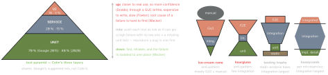
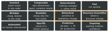

testing · folio
In one line: Catch each bug at the lowest level that can: many small, fast, deterministic tests and few broad ones (the pyramid). Test behaviour through the public API, so a test fails only when behaviour changes. A good test is FIRST and reads Arrange → Act → Assert.
Download PDF Print view LaTeX source


Size is how it runs; scope is what it checks
| small | medium | large | |
|---|---|---|---|
| runs in | one process — often one thread | one machine | many machines |
| forbidden | sleep, I/O, disk, network, any blocking call | network beyond localhost | nothing |
| Bazel timeout | 60 s | 300 s | 900 s · enormous 3600 s |
| scope | narrow = unit | medium = integration | large = end-to-end |
| Google mix | ∼80 % | ∼15 % | ∼5 % |
Size = how a test runs, what it may do, what it consumes; scope = how much code it validates. Interrelated but distinct: a narrow test that starts a database is medium. Small tests are faster and more deterministic whatever their scope. Large tests are kept for whole-system checks — more about configuration than code — and legacy code that cannot take doubles.
What makes it a unit test
- Common ground (Fowler): low-level, a small part of the system; written by the programmers with their everyday tools; significantly faster than other tests. What counts as a unit — a function, a class, a cluster — is the team’s call.
- Not a unit test (Feathers) if it talks to the database · talks across the network · touches the file system · cannot run at the same time as the other unit tests · needs the environment prepared (config edits). Such tests are not bad — keep them in their own suite so the fast one stays fast.
- Solitary — collaborators replaced by test doubles; sociable — real collaborators run too. Mockists write solitary tests, classicists sociable ones.
- Integration test, narrow — only the code that talks to another service, against a double of it; broad — live versions of every service (Fowler: call those system or end-to-end tests). Integrated test (Rainsberger) — passes or fails on the correctness of another system; the honeycomb wants none. Contract test — consumer and provider still keep the agreed interface.
The shapes mostly argue about words
The trophy’s and honeycomb’s “integration tests” are largely what pyramid users call sociable unit tests (Fowler, 2021). What matters instead (Justin Searls): tests with clear boundaries that run quickly and reliably and fail only for useful reasons. Wacker’s 70/20/10 was “a good first guess” — the mix varies, the shape stays. Judge a strategy by how it helps developers fix and prevent bugs, not only by the bugs it finds.
Numbers worth knowing
- Flakiness: as it nears 1 % tests lose value; Google’s rate hovers ∼0.15 %.
- Commit suite ≤ 10 minutes (Beck, via Fowler).
- Coverage only measures that a line ran, not what happened as a result.
- Beyoncé Rule: “If you liked it, then you shoulda put a test on it” — test everything you don’t want to break.
On Apple platforms
| unit, integration | Swift Testing (Swift 6, Xcode 16+) — a suite runs in parallel,
in-process, each @Test on a distinct suite instance; #expect records and continues,
#require throws and stops. XCTest runs a suite’s tests sequentially by default |
| UI, E2E | XCTest + XCUIAutomation (Xcode 16.3+): test code runs in a separate process and
drives the app through XCUIApplication, a proxy, using accessibility data |
| performance | XCTest — Apple: Swift Testing for new unit tests, XCTest for UI and performance; one target may hold both, one test never mixes them |
UI testing is unavailable to apps built with the visionOS SDK; iPhone and iPad apps running on visionOS can still be UI-tested.
FIRST — Ottinger & Schuchert
| Fast | run them all every minute or so without guilt; hesitating after a one-line change = too slow. A quarter-second test is “painfully slow”, a second “impossibly slow” |
| Isolated | no test relies on another, even indirectly; same result alone or in a suite, any order (Clean Code: Independent) |
| Repeatable | re-runs without intervention: no assumed initial state, no residue left behind, no external service that may be absent |
| Self-validating | pass or fail; nobody inspects output or state to decide |
| Timely | written with the code, just before each small change — never in batches; T was never “Thorough” |
Test Desiderata — Beck’s twelve

Some support each other (automated → faster), some interfere (more predictive → slower). The boxed pair is the rule below: coupled to behaviour, decoupled from structure.
One test — SUT, DOC, four phases
SUT — whatever thing the test exercises, seen from the test: a method, an object, a class, or the whole app. DOC (depended-on component) — what the SUT delegates to; the test must control and observe it, which is what test doubles are for.
@Test("10 % discount lowers the total") // name = behaviour
func discountLowersTotal() {
// Arrange · Given · setup: SUT, doubles for DOCs, input
let cart = Cart(prices: StubPrices(["tea": 100]))
cart.add("tea")
// Act · When · exercise: one call on the SUT
cart.apply(discount: .percent(10))
// Assert · Then · verify: the observable result
#expect(cart.total == 90) // not cart.lineCache
} // teardown: rarely needed in a unit testNorth’s template: Given some initial context, When an event occurs, Then ensure some outcomes. Wake’s Assert: claims about the object, its collaborators, its parameters — global state only rarely.
Behaviour, not implementation
- Call the public API, the way users do. Wanting to test a private method hints that the class does too much — split it (Vocke).
- Test state, not interactions; one test per behaviour, not per method; the name states the action and the expected outcome.
- The ideal test is unchanging — it changes only when requirements do. Of the four kinds of change — pure refactoring, new feature, bug fix, behaviour change — only the last should edit existing tests. Brittle = fails on an unrelated change that added no bug. Clear = why it exists and why it failed are obvious to whoever diagnoses the failure.
- No logic (loops, conditions) in tests; DAMP over DRY — a little duplication buys readability; a failure message shows expected, actual, inputs. Skip trivial code — plain getters, setters, anything without conditional logic (Vocke).